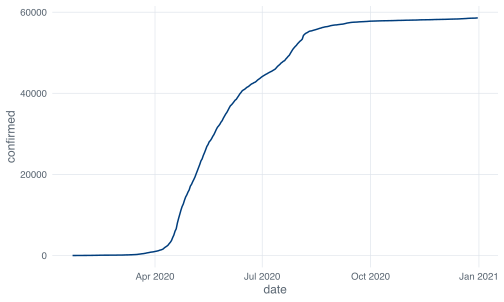

1 Getting set up
Two programs, and they have to go on in the right order. Budget twenty minutes, most of which is downloading. If you already have both installed and working, skip to the check at the end of this chapter, run it, and move on.
1.1 R first, then RStudio
R is the language and the engine. It is what actually adds the numbers up. RStudio is a front end: an editor, a console, a plot viewer and a file browser stitched together into one window. RStudio does no statistics of its own. When it starts, it goes looking for an R installation on your machine and talks to it.
Which is why R goes on first. If you launch RStudio with no R installed, it tells you it cannot find one and refuses to start, and you now have two problems to debug instead of none. Install R, confirm it exists, then install RStudio.
R comes from CRAN, at https://cran.r-project.org. Pick your operating system from the links at the top.
On macOS you will be offered two installers and you have to choose. If your Mac has an Apple silicon chip (M1 and later), take the one whose filename contains arm64. If it is an older Intel Mac, take the x86_64 one. Apple menu, then “About This Mac”, tells you which you have. Installing the wrong one is not fatal but it is slow and it will bite you later when a package needs compiling.
On Windows, follow “Download R for Windows”, then “base”, then the big download link. You may see a mention of Rtools on that page. You do not need it for this book. It is for compiling packages from source, which nothing here asks you to do.
On Linux, CRAN has per-distribution instructions and you should follow those rather than whatever your distribution’s default r-base package happens to be, because distribution repositories are often several versions behind.
This book needs R 4.1 or newer. Anything from the last few years is fine.
RStudio comes from Posit, at https://posit.co/download/rstudio-desktop/. You want RStudio Desktop, the free open-source version. There is a paid tier and a server edition. Neither is relevant to you.
Once both are installed, open RStudio and never open R directly again. R does have its own bare window, RGui on Windows and R.app on macOS, and it is austere in a way that helps nobody. Leave it alone.
1.2 The four panes
RStudio’s window is divided into four, and the first time you see it there is a lot going on. Here is what each one is for.
The Console, bottom left, is R itself. The > prompt is R waiting for you to say something. Type 1 + 1 there and press Enter and you get an answer. Everything that runs in this book runs through this pane, one way or another.
The Source pane, top left, is where your scripts live. It is empty when you first launch, because you have no scripts. Go to File, New File, R Script and it appears, pushing the console down into the lower half. This is where you will spend most of your time.
The Environment pane, top right, lists the objects R currently holds in memory: your data frames, your variables, anything you have created. It is the answer to “did that actually work?”. If you read a CSV and nothing shows up here, the read did not happen. The History tab next to it keeps a log of everything you have typed.
The bottom right pane is a stack of tabs: Files for browsing your folders, Plots for anything you draw, Packages for what is installed, Help for documentation, and Viewer for things like rendered Quarto pages. You will use Plots and Help constantly and largely ignore the rest.
If the layout does not suit you, Tools, Global Options, Pane Layout will rearrange it.
One thing to recognise now, because it catches almost everybody in the first hour. If your console prompt changes from > to +, R is not broken and it is not thinking. It has decided your command is incomplete and it is waiting for the rest.
> mean(c(1, 2, 3)
+
+That happens when you leave a bracket or a quote unclosed. Press Esc. The prompt goes back to > and you can start again. Beginners often press Enter harder, which produces more + symbols and more panic.
1.3 Three shortcuts, learned today
RStudio has hundreds of keyboard shortcuts and you can see the whole list with Alt+Shift+K on Windows or Option+Shift+K on a Mac. Three of them are worth learning before you write anything.
Run the current line. Ctrl+Enter on Windows and Linux, Cmd+Enter on a Mac. Put your cursor anywhere on a line in your script, press it, and that line is sent to the console and executed. The cursor then drops to the next line, so you can run a script line by line by holding the shortcut down. If you have text selected, it runs the selection instead. This is the one you will use ten thousand times.
Run the current chunk. Ctrl+Shift+Enter, or Cmd+Shift+Enter. In a Quarto or R Markdown document, code lives in fenced chunks, and this runs the whole chunk your cursor is sitting in. Useless in a plain .R script, essential the moment you start writing reports.
Insert the assignment arrow. Alt+-, or Option+-. It types <- with a space either side. R’s assignment operator is two characters, which is a nuisance to type, and the shortcut exists because everybody complained.
You may be wondering why R uses <- at all when = is right there and works. The story usually told is that R inherited the arrow from S, and S was written on terminals whose keyboards, borrowed from APL, had a single ← key, so assignment was one keystroke and nobody minded. The practical answer, which matters more, is that = already has a second job inside function calls, where it names arguments. Compare the two in one line:
The <- creates an object. The = sets an argument. Keeping them visually distinct means you can read a long function call and see at a glance what is being made and what is being configured. This book uses <- throughout and so should you.
1.4 The console is a conversation, the script is the record
Everything you type in the console runs immediately and then, for practical purposes, is gone. Yes, there is a History tab, but the history is an undifferentiated stream of everything you tried, including the five wrong attempts and the typo, in the order you happened to make them. Nobody has ever successfully reconstructed an analysis from RStudio’s history pane.
A script is a file. It runs top to bottom in a fixed order. You can open it in six months, send it to a co-author, put it in a repository, and re-run it to get the same numbers. That is the whole argument.
So: if you are poking at the data to see what is in it, use the console. nrow(covid), names(covid), checking whether a column is a character or a number. Ephemeral questions with ephemeral answers. If you are doing something you would have to redo, or something you would need to defend, it goes in the script. My rule of thumb is that if I had to stop and think about how to write a line, that line belongs in a file.
The unhappy middle ground is the analysis that lives entirely in the console and works beautifully, right up until R restarts. There is no way to recover it. Write the script.
1.5 Packages, install.packages() and library()
Base R can do a lot and it is deliberately conservative about what ships in the box. Almost everything you actually want lives in a package, and packages come from CRAN, the Comprehensive R Archive Network. CRAN is a network of mirror servers holding many thousands of packages, each of which has passed an automated check on several operating systems before being accepted. It is not a free-for-all like some language ecosystems. That gatekeeping is why install.packages() from a fresh R install usually works.
There are two verbs and beginners conflate them constantly.
install.packages("tidyverse") downloads the package from CRAN and writes it to your hard disk. You do this once per machine. It takes a while, especially for the tidyverse, because the tidyverse is a meta-package: installing it installs about thirty others.
install.packages("tidyverse")library(tidyverse) loads an already-installed package into your current R session, so its functions become available by name. You do this every session, at the top of every script. Restart R and it is undone.
The bookshelf analogy is worn out but it is the right one. install.packages() buys the book and puts it on the shelf. library() takes it down and opens it. Buying it again every morning would be strange; opening it every morning is normal.
The quotes are inconsistent and this trips people up. install.packages() needs them, because it takes the package name as a string. library() does not, because of an old piece of R cleverness that lets it accept a bare name. Quotes are accepted by both, so if you would rather not remember which is which, quote both and move on.
When you run library(tidyverse) in a fresh session, this appears:
── Attaching core tidyverse packages ──────────────────────── tidyverse 2.0.0 ──
✔ dplyr 1.2.1 ✔ readr 2.2.0
✔ forcats 1.0.1 ✔ stringr 1.6.0
✔ ggplot2 4.0.3 ✔ tibble 3.3.1
✔ lubridate 1.9.5 ✔ tidyr 1.3.2
✔ purrr 1.2.2
── Conflicts ────────────────────────────────────────── tidyverse_conflicts() ──
✖ dplyr::filter() masks stats::filter()
✖ dplyr::lag() masks stats::lag()
ℹ Use the conflicted package (<http://conflicted.r-lib.org/>) to force all conflicts to become errorsYour version numbers will differ. The red crosses are not errors. They are telling you that dplyr has a function called filter() and so does base R’s stats package, and since dplyr was loaded second, typing filter() now gets you dplyr’s. That is what you want, and it is a good thing R says so out loud rather than deciding silently. If you ever need the other one, stats::filter() names it explicitly. The :: means “this function, from that package”.
Get used to reading this block rather than scrolling past it. When a function starts behaving strangely, “something else masked it” is a real and common explanation.
1.6 Getting the data
The book runs on one file, sg_covid_data.csv. There are two ways to get it.
The thorough way is to take the whole book. Go to https://github.com/CERM-NUS/r-intro, click the green Code button, choose Download ZIP, and unzip it somewhere you will find again. Documents, not Downloads. You now have the data, the source of every chapter, and a .Rproj file. Double-click r-intro.Rproj and RStudio opens with everything pointed at the right place.
The quick way is to take just the CSV. The link in this book’s sidebar, “Download the data”, goes straight to it. Right-click, Save Link As. Then make yourself a folder for this course with a data subfolder inside it, and put the CSV in there:
sph5421/
├── data/
│ └── sg_covid_data.csv
└── analysis.RTwo warnings about that download. Some browsers append .txt to files they think are plain text, so check that what landed on disk is called sg_covid_data.csv and not sg_covid_data.csv.txt. And do not open it in Excel to have a look. Excel will offer to save it back, and when it does it will silently rewrite the date column into whatever your regional settings prefer. If you want to see inside the file, the next chapters show you how to look at it in R, which is non-destructive.
1.7 Does it work?
Here is the check. Open a new script, type this in, and run it a line at a time.
library(tidyverse)
covid <- read_csv("data/sg_covid_data.csv")
#> Rows: 345 Columns: 13
#> ── Column specification ────────────────────────────────────────────────────────
#> Delimiter: ","
#> chr (1): administrative_area_level_1
#> dbl (11): confirmed, deaths, stringency_index, government_response_index, c...
#> date (1): date
#>
#> ℹ Use `spec()` to retrieve the full column specification for this data.
#> ℹ Specify the column types or set `show_col_types = FALSE` to quiet this message.
nrow(covid)
#> [1] 345You should get 345, and above it a column specification listing 13 columns: one character, eleven numbers and one date. Read that block rather than scrolling past it. It is readr telling you what it decided each column was, and the import chapter comes back to what happens when it guesses wrong.
You will also see the tidyverse startup message from the previous section. It does not appear on this page because the machine that built the book had already loaded the tidyverse before this chapter started, which is a small preview of why sessions matter.
Now check that graphics work:

A line should appear in the Plots pane, climbing from zero in January to just under sixty thousand by December. Yours will have a grey background and mine does not, because this book applies a house theme to every figure. Same data, different paint.
If the plot does not appear and the Plots pane looks squashed, drag the divider between the panes to make it taller. RStudio cannot draw into a pane a few pixels high.
1.7.1 When it does not work
Three failures account for nearly all of them.
Error in library(tidyverse) : there is no package called ‘tidyverse’The install did not finish, or finished with an error you scrolled past. Run install.packages("tidyverse") again and watch the output this time. On Windows, if it complains that the package is in use, restart R first.
Error:
! 'data/sg_covid_data.csv' does not exist in current working directory:
'/Users/you/Desktop'.R is looking in the wrong place. The message tells you exactly where it looked, which is more helpful than most. Either the file is not where you think it is, or R’s working directory is not where you think it is. Type getwd() to see where R currently believes it is standing:
getwd()
#> [1] "/Users/swapnil/Documents/GitHub/r-intro"Yours will print something else. The whole of the next chapter is about making this stop being a problem, so if you hit this one, keep reading rather than fixing it by hand.
Error: unexpected input in "covid <- read_csv(“"Something in the line is not valid R. That particular one is a smart quote, the curly “ that Word and Slack substitute for the straight ". R does not recognise it as a quote character at all. If instead you left out a comma you get its sibling:
Error: unexpected symbol in "covid <- read_csv("data/sg_covid_data.csv" nrow"Both messages quote your line back at you and stop at the point where R gave up parsing. That stopping point is the clue. Look just before it.
If none of those match what you are seeing, copy the error text exactly, without your own file paths and object names, and search for it. Someone has had it before.